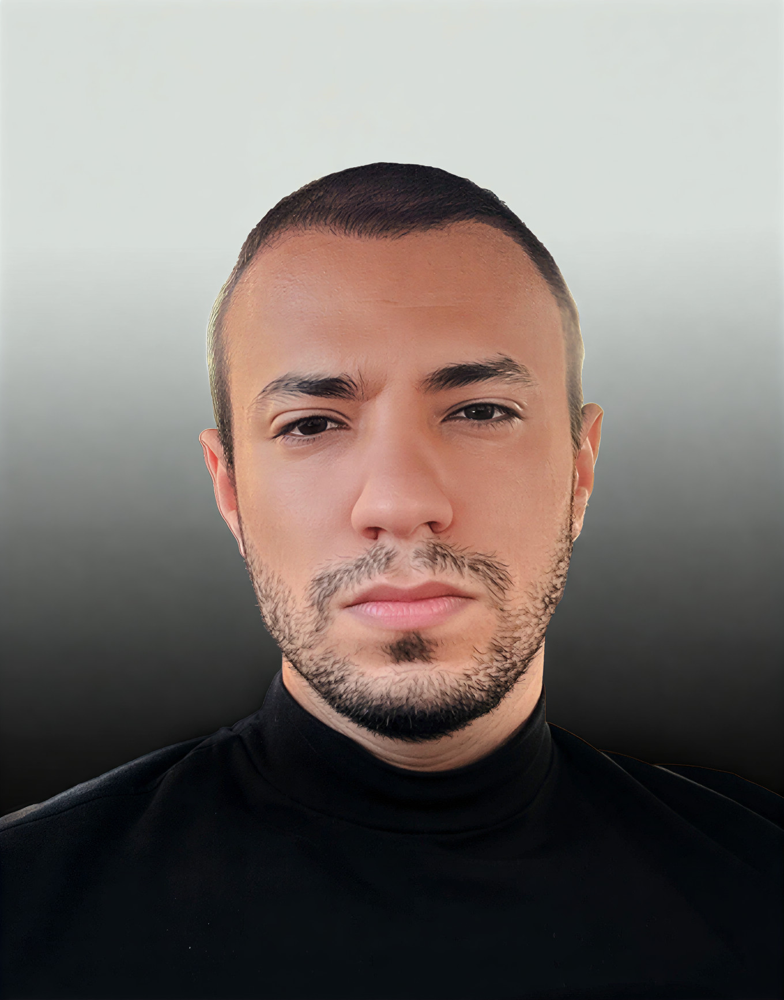

01
Creative Direction
Concept development, visual language, campaign thinking, brand worlds, moodboards, treatments, storyboards, references, and visual quality control.
Profile / International

Jawher Hamdi, working as Jay Hamdi, is a multidisciplinary designer building an independent practice across art direction, creative production, and product design.
After five years in UX/UI and product design, I expanded my practice into campaign concepts, treatments, moodboards, storyboards, photography and video production, digital experiences, and design systems. My UX/UI background brings research, audience insight, accessibility, and systems thinking into the creative process, while Jay Studio gives selected ideas a production path through film, photography, and rollout assets.
I started in product design, where clarity has consequences. That foundation still shapes how I direct creative work: understand the audience, define the real problem, make a decisive visual choice, and carry it all the way through delivery.
Capabilities / 01—04
01
Concept development, visual language, campaign thinking, brand worlds, moodboards, treatments, storyboards, references, and visual quality control.
02
Photo and video production, pre-production, shot lists, locations, props, talent and styling coordination, on-set decisions, edit feedback, and delivery review.
03
UX/UI, interaction and service design, information architecture, prototypes, design systems, accessibility, user journeys, and usability testing.
04
User interviews, stakeholder workshops, UX audits, A/B testing, journey mapping, requirements definition, competitor review, and insight synthesis.
Experience
Jay Studio / International
Creative concepts, visual treatments, production planning, on-set direction, and post-production review for film, photography, and digital rollout.
FORVIA Faurecia / Palantir Foundry
Enterprise dashboards, UX audits, design systems, and data-heavy operational experiences.
Addinn Group / Research & Product Strategy
Discovery, product definition, research, journey mapping, prototyping, testing, and secure financial experiences.
Jay Studio / Production arm
Jay Studio brings the creative and production core, then assembles the right collaborators around each idea: cinematographers, photographers, stylists, talent, sound designers, editors, developers, and designers.
Bring the starting point